In this recipe, we will discuss an OSB feature called service accounts. A service account (SA) is mainly used by proxy and business services for setting up an outbound connection to external resources such as a JMS, FTP, or E-mail server, where authentication is necessary. Apart from that it can be used for simple transport-level authentication to remote web services where HTTP basic authentication is necessary.
The setup for that recipe is shown in the following figure. We can see that both the Customer Management proxy service on the left and the Mock CustomerService proxy service on the right (the mock implementation) require Basic authentication. In between, we have the Customer Service business service which we will configure in this recipe so that the credentials are passed-through.
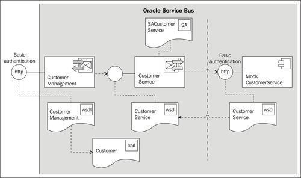
Make sure to have access to a working Eclipse OEPE. We will continue with a project from Chapter 1, Creating a Basic OSB Service, which we made available as a new import in the folder \chapter-12\getting-ready\using-service-accounts-with-osb. Import both projects into Eclipse OEPE. The using-service-accounts-with-osb project holds the solution from Chapter 1, Creating a Basic OSB Service, and the using-service-accounts-with-osb-mockservice contains the implementation of a mock service required for testing the basic authentication. This is not possible with a soapUI mock service; therefore we have implemented another proxy service on the OSB that acts as a mock service.
Click on the proxy service MockCustomerService.proxy in the proxy folder of the using-service-accounts-with-osb project and navigate to the HTTP Transport tab.
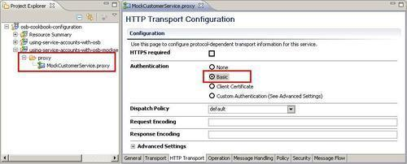
The proxy service specifies that basic authentication is required, but without using HTTPS. If we check the Message Flow tab, we see that the mock service returns a hardcoded response and uses the Log action to write the value of the $inbound variable (holding the authenticated user) to the Service Bus Console Output window.
Deploy the two OSB projects to the OSB server.
Before we change anything, let's test the behavior of the current setup. We will use soapUI to invoke the CustomerManagement proxy service as we have seen in Chapter 1, Creating a Basic OSB Service. In soapUI, perform the following steps:
\chapter-12\getting-ready\using-service-accoutns-with-osb\soapui\CustomerManagement-soapui-project.xml file and click Open.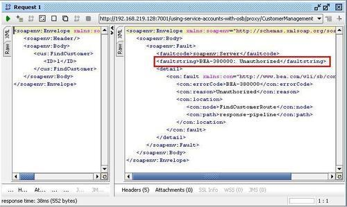
This is because the mock service requires proxy authentication but we don't send any credentials.
We will now show you how to configure a proxy and business service so that the credentials are passed through the OSB to the mock service using basic authentication on both ends.
In Eclipse OEPE, we will extend the project with a service account and change configuration of the business service and soapUI to activate HTTP basic authentication.
First we will configure a service account object, which will then be used by the business service to configure the basic authentication. In Eclipse OEPE, perform the following steps:
security. security folder and select New | Service Account. SACustomerService into the File name field.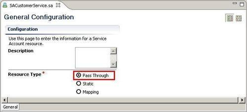
Now with the service account in place, let's configure the business service to use it together with basic authentication.
CustomerService.biz in the business folder. security folder from the tree and select the SACustomerService Service Account.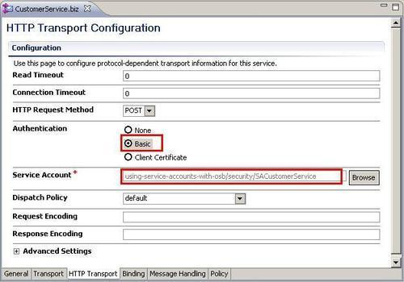
Last but not least, we also have to tell the proxy service to use basic authentication:
CustomerManagement.proxy in the proxy folder.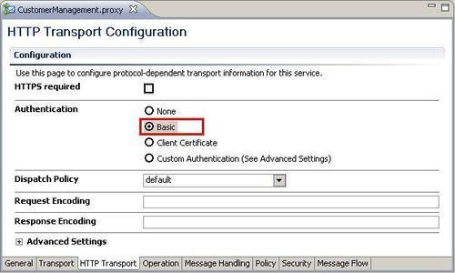
This finishes the end-to-end configuration of the basic authentication with the OSB just passing it through to the CRM system (that is, the mock service).
Before we can test that the basic authentication to the CRM system works, we need a user to test with. Since OSB uses the WebLogic security framework, we will need to add the username/password to the WebLogic security realm.
In WebLogic console, perform the following steps:
crmuser in the Name field, welcome1 into the Password and Confirm Password field.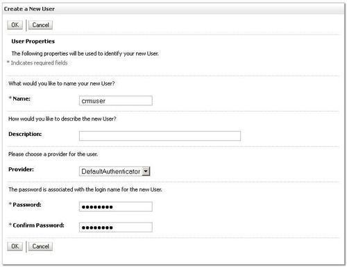
Next, we will setup the soapUI mock service from Chapter 1, Creating a Basic OSB Service, to require basic authentication.
Let's go back to soapUI and perform the following steps to test the new behavior:
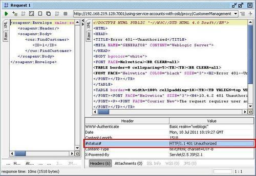
crmuser into the Username field and welcome1 into the Password field.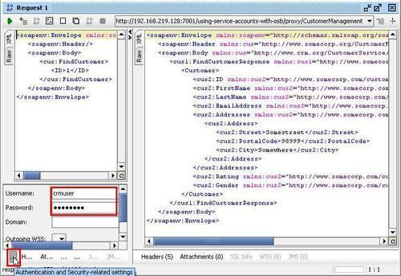
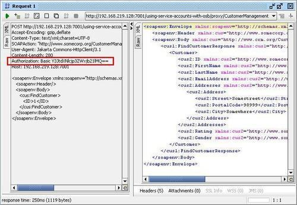
$inbound variable which the mock service logs. $inbound contains transport related header information as well as some security information including where the authenticated user can be found (that is, crmuser in our case).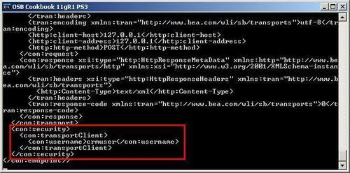
This shows that the end-to-end security is working. The consumer of the proxy service (soapUI) sends a request using basic authentication and the same user is passed through the OSB and used on the other end to invoke the mock service (representing the CRM system).
The account used in the custom HTTP header will be validated against available authenticators of the WebLogic security realm and then passed through by the OSB business service to the CRM system. The pass-through behavior comes from the setup of the service account object, which is then being linked to the business service.
The authorization value Y3JtdXNlcjp3ZWxjb21lMQ== is actually a base64 encoded string. This is not a safe way to authenticate because the encoded string, although unreadable for a human, can be easily decoded. Basic authentication is therefore only advised in combination with transport security as SSL and is shown later in the recipe Configuring a proxy service to use HTTPS security.
In this section, we show some other ways of using the service account artefact in the OSB.
In this recipe, we demonstrated how to pass a username and password from a service client through the OSB. However, it is also possible to simply configure the service account to static. With static, we can provide the User Name and Password directly in the OSB without having to go to the WebLogic security realm.
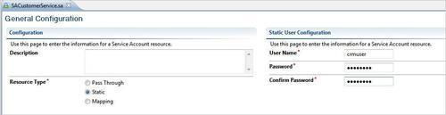
The last Resource Type option in the service account configuration is Mapping. With mapping, we can map an authenticated user on a proxy service to a user that will be used in the business service.
The Local User Mappings table will contain users authenticated by the proxy service for an incoming request. This table must contain users available in the WebLogic security realm. The Remote Users table contains users and passwords used by the business service for their remote callout. These users do not have to be part of the WebLogic security realm.
In the following example, we configure the crmuser to be the remote user and the osbbook user, which we have added in the recipe Configuring OSB server for OWSM of Chapter 11, Handling Message-Level Security Requirements, as the local user.
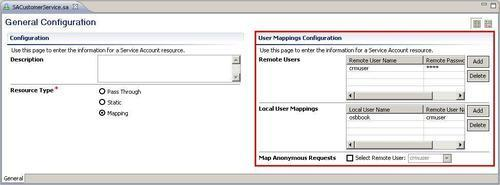
So now we can use the osbbook user in soapUI and everything should still work as before. If we check on the Service Bus Console output we can also see that the business service is using the crmuser to authenticate against the CRM service (the mock service).
In a XQuery transformation on the OSB, it's possible to read a service account configuration using the function fn-bea:lookupBasicCredentials. This is useful when we need to map a username and password into the content of a SOAP header or body structure. This function can only be used with a service account that is configured with the Static Resource type. The correct syntax for using the function in our current project is:
fn-bea:lookupBasicCredentials('using-service-accounts-with-osb/security/SACustomerService')
This will return the following XML fragment:
<UsernamePasswordCredential xmlns="http://www.bea.com/wli/sb/services/security/config"> <username>crmuser</username> <password>welcome1</password> </UsernamePasswordCredential>